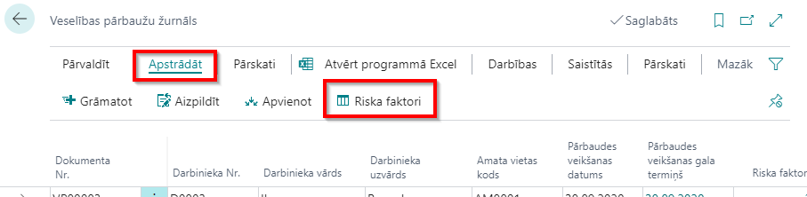

Obligātā veselības pārbaude
Riska faktoru definēšana
Katram amatam ir piesaistīti savi riska faktori – vienam amatam tie var būt gan viens, gan vairāki. Riska faktorus definē sarakstā Riska faktori.
Katrs riska faktors satur sekojošu informāciju:
- Kods – unikāls riska faktora identifikators;
- Apraksts – riska faktora nosaukums;
- Tips – piemēram, darba vides vai īpašais;
- Pārbaužu periodiskums – cik bieži par konkrēto risku jāveic veselības pārbaudes.
Veselības pārbaužu žurnāls
Informācija par plānotajām veselības pārbaudēm tiek glabāta reģistrā Veselības pārbaužu žurnāls:
- Dokumenta Nr. - unikāls ieraksta identifikators;
- Darbinieka Nr. – no darbinieku klasifikatora;
- Darbinieka vārds;
- Darbinieka uzvārds;
- Amata kods – aizpilda, ja vēl nav noslēgtas darba attiecības ar potenciālo darbinieku, bet ir jānosūta uz obligāto veselības pārbaudi atbilstoši riskiem konkrētam amatam;
- Pārbaudes veikšanas datums – datums, kad pārbaude ir veikta; sākumā plānotais, reģistrējot faktiskais;
- Pārbaudes veikšanas gala termiņš – termiņš, līdz kuram ir jāveic pārbaude; tiek aizpildīts automātiski, atkarīgs no amata riska faktora periodiskuma un pēdējās veiktas pārbaudes datuma;
- Riska faktori – no riska faktoru klasifikatora;
- Veselības pārbaudes veids – pirmreizējā, periodiskā vai ārkārtas;
- Ārpuskārtas pārbaudes iemesls;
- Nosūtījums izdrukāts – atzīme par to, ka nosūtījums izdrukāts.
Veselības pārbaužu žurnālu ir iespējams aizpildīt manuāli vai arī ģenerējot no sistēmā pieejamās informācijas, kā arī pieņemot jaunu darbinieku, grāmatojot Personāla rīkojumu, pirmreizējā veselības pārbaude tiks uzģenerēta automātiski. Par Personāla rīkojumiem ir aprakstīts nodaļā Personāla rīkojumi.
Veselības pārbaužu žurnāla ierakstu manuālā aizpildīšana
Aizpildot žurnālu manuāli, pildot informāciju par riskiem, ir jāpilda caur pogu Apstrādāt - Riska faktori.

Tabula Veselības pārbaužu žurnāla riska faktori satur sekojošu informāciju:
- Dokumenta Nr. – automātiski ģenerējas no numuru klasifikatora;
- Riska faktora kods – definēts no riska faktoru klasifikatora;
- Riska faktora apraksts;
- Riska faktora tips – piemēram, darba vide;
- Darbinieka amata Nr. – darbinieka amata numurs no amatu klasifikatora;
- Amata kods – amata kods no amatu klasifikatora;
- Amata apraksts;
- Amata no datums – datums, no kura amats ir izveidots;
- Riska faktora no datums – datums, no kura riska faktors ir izveidots;
- No datums – darbinieka amata vai amata riska faktora jaunākais datums (paredzēts izdrukai, lai būtu iespēja norādīt no kāda datuma darbinieks pakļauts šim riskam)
- Iepriekšējās pārbaudes ieraksta datums;
- Iepriekšējās žurnāla rindas datums;
- Iepriekšējās pārbaudes datums;
- Pārbaudes veikšanas gala termiņš – termiņš, līdz kuram ir jāveic pārbaude; tiek aizpildīts automātiski, atkarīgs no amata riska faktora periodiskuma un pēdējās veiktas pārbaudes datuma;
- Atzinuma kods – no atzinumu klasifikatora;
- Atzinuma apraksts.
Aizpildot lauku Riska faktora kods, pārējie lauki, izņemot laukus Atzinuma kods un Atzinuma apraksts, aizpildīsies automātiski pie nosacījuma, ka pie riska faktori tika piesaistīti amatam, veidojot amata kartiņu.
Veselības pārbaužu žurnāla ierakstu automātiska ģenerēšana
Lai aizpildītu žurnālu automātiski, klikšķiniet uz pogas Aizpildīt. Ģenerējot žurnāla ierakstus automātiski tiek ņemti riska faktori no darbinieka amatiem piesaistītajām amata vietām. Ģenerējot nepieciešams norādīt datumu uz kuru vēlas veidot veselības pārbaudes.
Žurnāla ierakstus ir iespējams ģenerēt pēc Darbinieka numura, Amata koda, Profesiju koda, Struktūrvienības koda, Riska faktora koda un Riska faktora tipa. Cilnē Opcijas ievada datumu, uz kuru vēlas ģenerēt žurnāla rindas. Lai noskaidrotu riska faktora nākamās pārbaudes termiņu, sistēma pārbauda veselības pārbaužu ierakstos esošās iepriekšējās pārbaudes datums un darbinieka amatā stāšanās datums. No šī iegūtā datuma izmantojot riska faktora periodiskumu tiek aprēķināts nākamās pārbaudes termiņš. Ja šis termiņš ir pirms sākotnējā norādītajā žurnāla aizpildīšanas datuma, tad konkrētā veselības pārbaude tiek pievienota žurnālam.
Veselības pārbaužu žurnāla ierakstu apvienošana
Ja vienam darbiniekam ir vairāki riska faktori, tad sākumā tiek izveidotas vairākas veselības pārbaudes par katru riska faktoru. Lai nepieciešamības gadījumā apvienotu žurnālā esošās veselības pārbaudes zem vienas, žurnālā ir apvienošanas funkcija Apvienot.
Šī funkcija no atfiltrētajiem ierakstiem pēc darbinieku numuriem apvieno veselības pārbaudes vienā. Ja lietotājs vēlas apvienot tikai viena darbinieka veselības pārbaudes, tad filtrā ieliek darbinieka numuru.
Kā pārbaudes veikšanas gala termiņš atlikušajai veselības pārbaudei tiek norādīts ātrākais termiņš no tajā apvienotajiem riska faktoriem.
Veselības pārbaudes nosūtījuma izdruka
Kad veselības pārbaude atrodas žurnālā ir iespējams izveidot veselības pārbaudes nosūtījuma izdruku, nospiežot pogu Drukāt nosūtījumu. Pēc drukāšanas laukā Nosūtījums izdrukāts iepildās ķeksis.
Veselības pārbaudes atzinums
Pēc veselības pārbaudes veikšanas saņemot atzinumu, to ievada tabulā Veselības pārbaužu žurnālā caur pogu Riska faktori. Izvēlās Atzinuma kodu no Veselības pārbaužu atzinumu klasifikatora.
Veselības pārbaužu atzinumi klasifikators sastāv no sekojošiem laukiem:
- Kods – unikāls atzinuma kods;
- Apraksts – atzinuma apraksts.
Veselības pārbaužu žurnāla grāmatošana un veselības pārbaužu ieraksti
Pēc atzinuma ievadīšanas Veselības pārbaužu žurnālu var iegrāmatot ar pogu Grāmatot. Lai nodrošinātu vēsturisku informāciju par veselības pārbaudēm, no veselības pārbaužu žurnāla pēc grāmatošanas tiek aizpildīti darbinieka veselības pārbaužu ieraksti reģistrā Veselības pārbaužu ieraksti. Tie satur sekojošu informāciju:
- Dokumenta Nr. – unikāls ieraksta identifikators;
- Darbinieka Nr. – no darbinieku klasifikatora;
- Darbinieka vārds;
- Darbinieka uzvārds;
- Darbinieka amats Nr. - darbinieka amata numurs no amatu klasifikatora;
- Amata vietas kods – darbinieka amata kods no amatu klasifikatora;
- Amata apraksts;
- Riska faktora kods – no riska faktoru klasifikatora;
- Riska faktora apraksts;
- Riska faktora tips - piemēram, darba vide;
- Pārbaudes veikšanas datums – datums, kad pārbaude ir veikta;
- Pārbaudes veikšanas gala termiņš – pārbaudes veikšanas termiņš;
- Veselības pārbaudes veids - pirmreizējā, periodiskā vai ārkārtas;
- Ārpuskārtas pārbaudes iemesls;
- Atzinuma kods – no atzinumu klasifikatora;
- Atzinuma apraksts;
- Piezīmes.